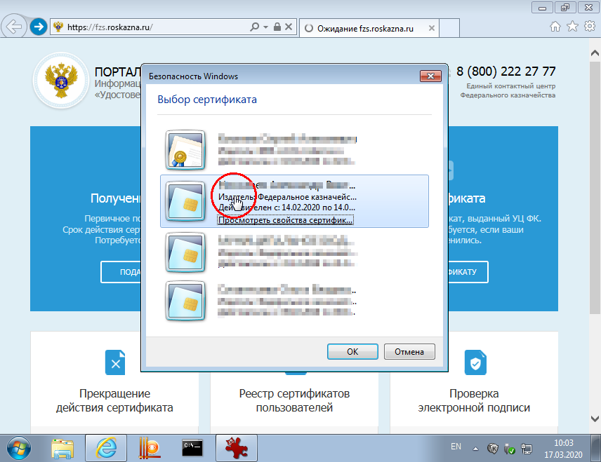
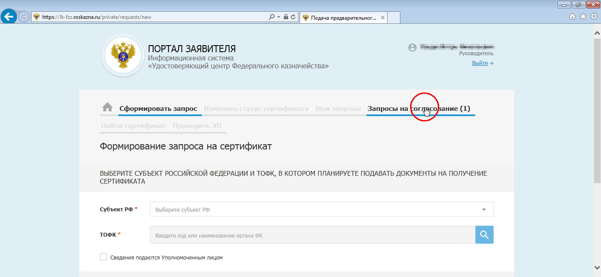
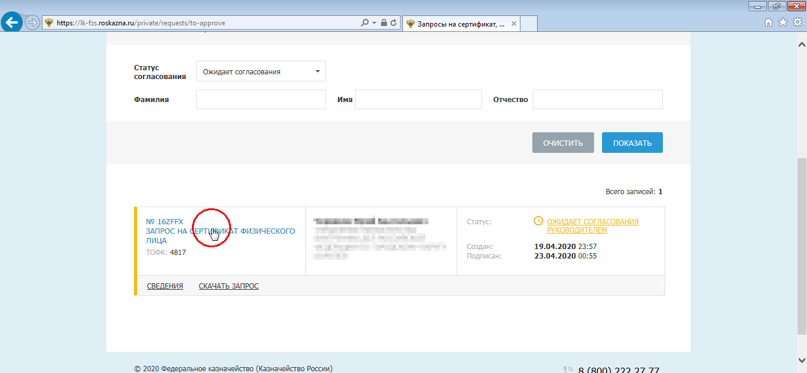
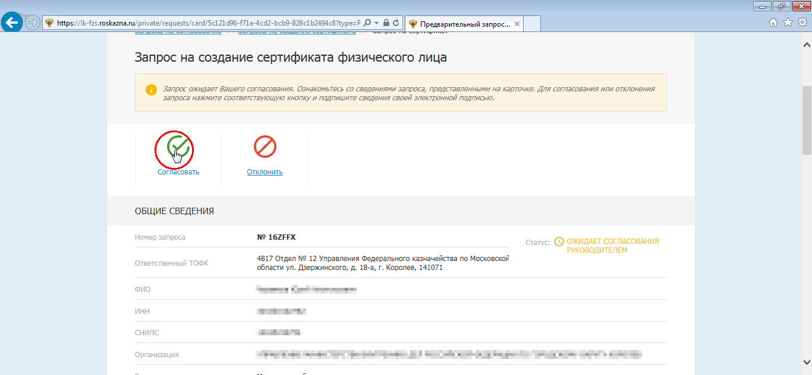
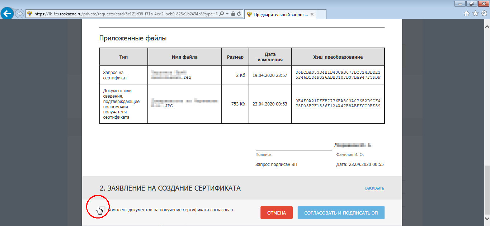
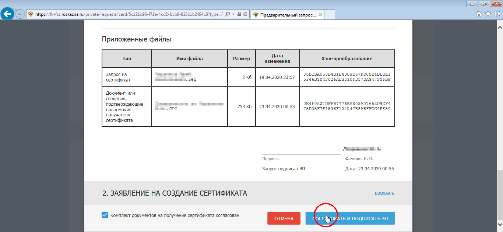
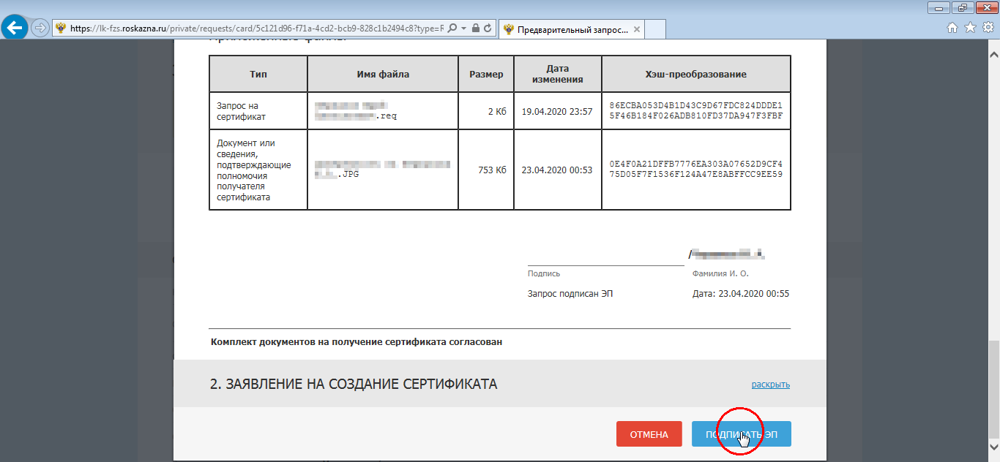
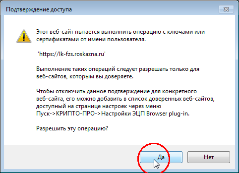
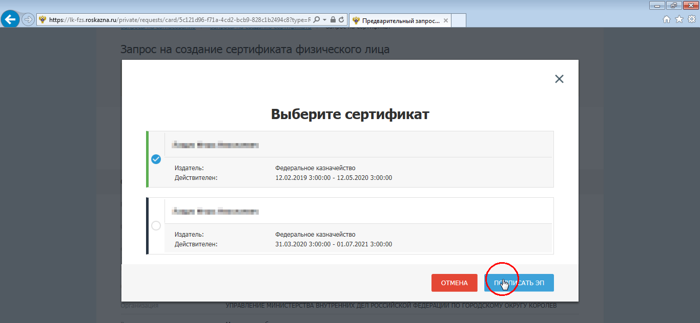

Согласование повторного запроса на сертификат у руководителя организации
Зайдите на главную страницу портала ФЗС по адресу https://fzs.roskazna.ru и пройдите в личный кабинет при помощи кнопки Войти по сертификату

Выберите сертификат для входа - подойдет любой действующий сертификат, выданный казначейством. Введите пароль от ключа. 
Перейдите на вкладку Запросы на согласование 
Нажав на номер запроса пройдите внутрь запроса и ознакомьтесь с его содержимым 
Если все верно, нажмите кнопку Согласовать 
Внизу страницы отметьте пункт Комплект документов на получение сертификата согласован и нажмите кнопку Согласовать и подписать ЭП


Так же внизу страницы нажмите кнопку Подписать ЭП 
Плагин подписи может запросить разрешение на запуск - нажмите Да 
Выберите сертификат для подписи запроса. Подойдет любой из представленного списка 
На этом процедура согласования закончена. После этого запрос уйдет на проверки в СМЭВ и казначейство.